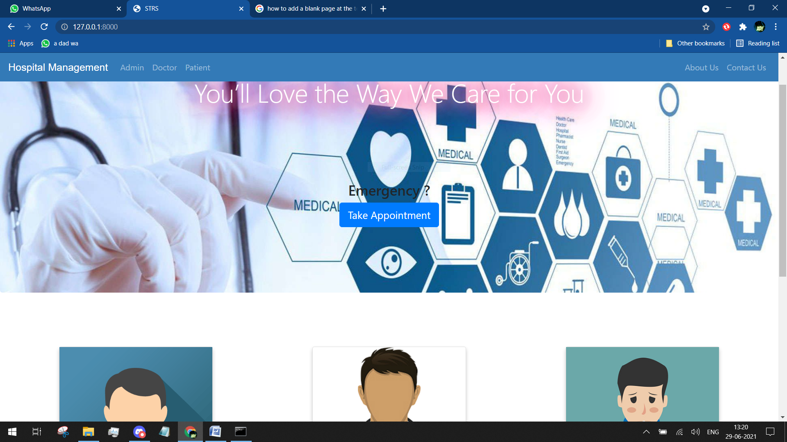

ABOUT
Seeking a beginner role to enhance and explore my technical knowledge gained at Invertis University in the past years I am currently pursuing Batchlors of computer applications and mainly Interested in the field of Web development.
Proficient with Programming Languages such as JavaScript , C++ and Java with an understanding of the Python Environment.
Looking for an opportunity to work in a challenging position combining my skills in Software Engineering, which provides professional development, interesting experiences and personal growth.
PROJECTS
Project 1 - Personal assistant bot Personal assistant bot is a program developed using python,that automates some windows 10 tasks as per user inputs and can give meaningful replies to various voice commands given by user.
Project 2 - Hospital Management System It is a web based application that allow users to booking /cancel appointments and manages various activities in the hospital
SKILLS
- LANGUAGES. :c++ , Python ,Java,
- Web technologies. : HTML , CSS,Javascript
- Content creating and video editing softwares : Adobe premier Pro, Adobe photoshop , Blender , Adobe after effects
- Ide's : Vsual studio code, Pycharm
EDUCATION
- Graduation
Bachelor of computer application
2021
Invertis University,Bareilly,UP - 12th
2018
Shri gulab rai Montessori senior secondary school bareilly
CBSE BOARD - 10th
2016
Shri gulab rai Montessori senior secondary school bareilly
CBSE BOARD
CONTACT
- Phone Number - 9760147296
- Email - tyagi4366@gmail.com